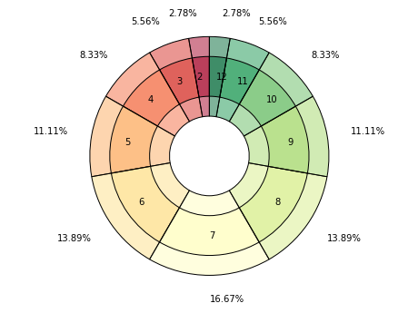
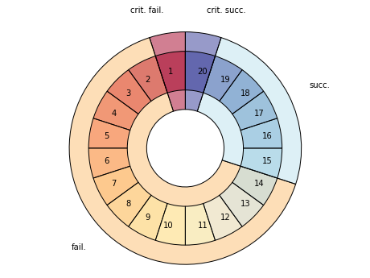

Introduction to dyce
dyce is a pure-Python library for exploring dice probabilities designed to be immediately and broadly useful with minimal additional investment beyond basic knowledge of Python.
dyce is an AnyDice replacement that leverages Pythonic syntax and operators for rolling dice and computing weighted outcomes.
While Python is not as terse as a dedicated grammar, it is quite sufficient, and often more expressive.
Those familiar with various game notations should be able to adapt quickly.
dyce is fairly low level by design, prioritizing ergonomics and composability.
While any AnyDice generously affords a very convenient platform for simple computations, its idiosyncrasies can lead to confusion and complicated workarounds.
Like AnyDice, it avoids stochastic simulation, but instead determines outcomes through enumeration and discrete computation.
Unlike AnyDice, however, it is an open source library that can be run locally and modified as desired.
Because it exposes Python primitives rather than defining a dedicated grammar and interpreter, one can easily integrate it with other Python tools and libraries.
In an intentional departure from RFC 1925, § 2.2, it provides minor formatting conveniences for casual tinkering.
However, it really shines when used in larger contexts such as Matplotlib or Jupyter.
dyce should be sufficient to replicate or replace AnyDice and most other dice probability modeling libraries.
It strives to be fully documented and relies heavily on examples to develop understanding.
If you find its functionality or documentation confusing or lacking in any way, please consider contributing an issue to start a discussion.
Source code is available on GitHub.
Examples
dyce provides two key primitives. H objects represent histograms for modeling or outcomes and individual dice, and P objects represent pools (ordered sequences) of histograms:
1 | |
Both support arithmetic operations. A six-sided die can be modeled as:
1 2 | |
H(n) is shorthand for explicitly enumerating faces \([{{1} .. {n}}]\), each with a frequency of 1:
1 2 | |
Tuples with repeating faces are accumulated. A six-sided “2, 3, 3, 4, 4, 5” die can be modeled as:
1 2 | |
A fudge die can be modeled as:
1 2 | |
Python’s matrix multiplication operator (@) is used to express the number of a particular die (roughly equivalent to the “d” operator in common notations).
A pool of two six-sided dice (2d6) is:
1 2 | |
Where n is an integer, P(n, ...) is shorthand for P(H(n), ...).
The above can be expressed more succinctly:
1 2 | |
Pools (in this case Sicherman dice) can be compared to histograms:
1 2 3 | |
Arithmetic operations implicitly flatten pools into histograms.
3×(2d6+4) is:
1 2 | |
In interpreting the results, we see there is one way to make 18, two ways to make 21, three ways to make 24, etc.
One way to model subtracting the least of two six-sided dice from the greatest is:
1 2 | |
Histograms should be sufficient for most calculations.
However, pools are useful for selecting (or “taking”) only some of the pool’s faces.
This is done by providing the optional key argument to the h method.
Indexes can be integers, slices, or iterables thereof.
Faces are ordered from least to greatest (i.e., 0, 1, …, -2, -1).
Summing the least two faces when rolling three six-sided dice would be:
1 2 3 4 5 | |
Mind your parentheses
Parentheses are needed in the above example because @ has a lower precedence than […].
1 2 3 4 5 6 | |
Histograms provide rudimentary formatting for convenience:
1 2 3 4 5 6 7 8 9 10 11 12 13 | |
Selecting the least, middle, or greatest face when rolling three six-sided dice would be:
1 2 3 4 5 6 7 8 9 10 11 12 13 14 15 16 17 18 19 20 21 22 23 24 25 26 27 28 29 30 31 32 | |
Summing the greatest and the least faces when rolling an entire standard six-die polygonal set would be:
1 2 3 4 | |
Note that pools are ordered and iterable:
1 2 | |
Indexing selects particular histograms in a pool:
1 2 | |
If desired, one way to enumerate all possible rolls is:
1 2 3 | |
If matplotlib is installed (e.g., via Jupyter), dyce.plt provides some experimental, rudimentary conveniences:
1 2 | |
Calling matplotlib.pyplot.show presents:

The outer ring and corresponding labels can be overridden for interesting, at-a-glance displays. Overrides apply counter-clockwise, starting from the 12 o‘clock position:
1 2 3 4 5 6 7 | |
Calling matplotlib.pyplot.show presents:

License
dyce is licensed under the MIT License.
See the LICENSE file for details.
Source code is available on GitHub.
Installation
Installation can be performed via pip (which will download and install the latest release):
1 2 | |
Alternately, you can download the sources (e.g., from GitHub) and run setup.py:
1 2 3 4 5 | |
Requirements
A modern version of Python is required:
dyce has the following dependencies (which will be installed automatically):